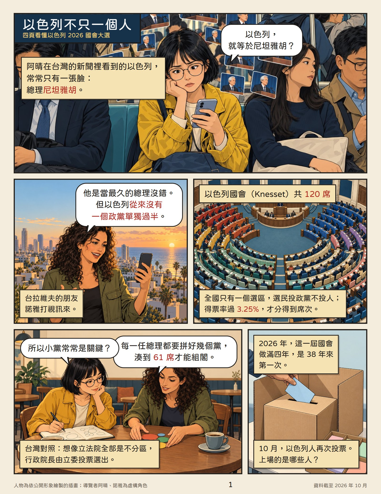
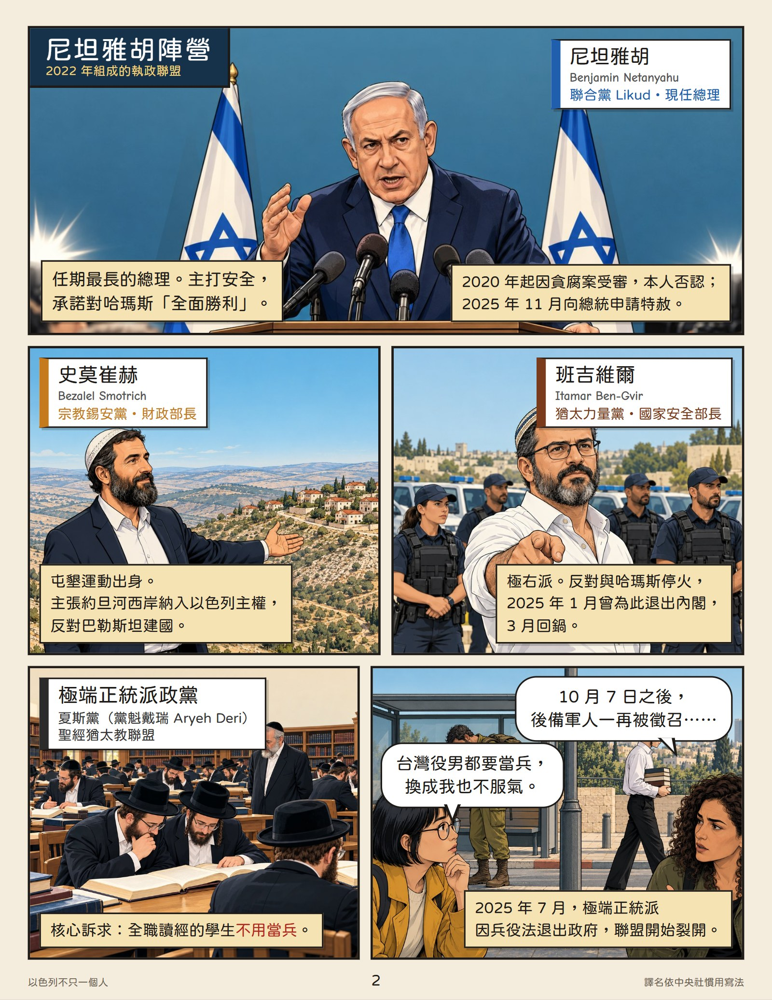
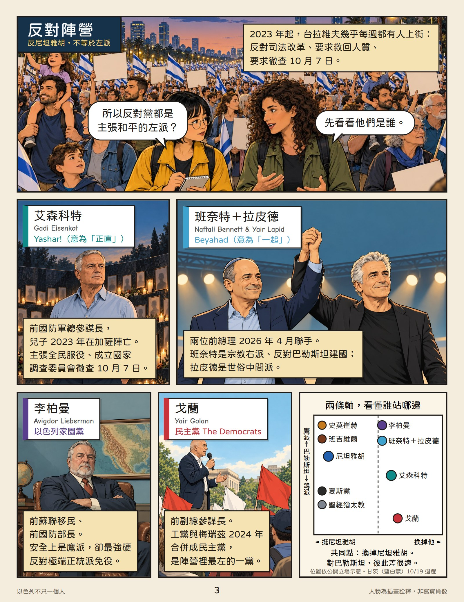
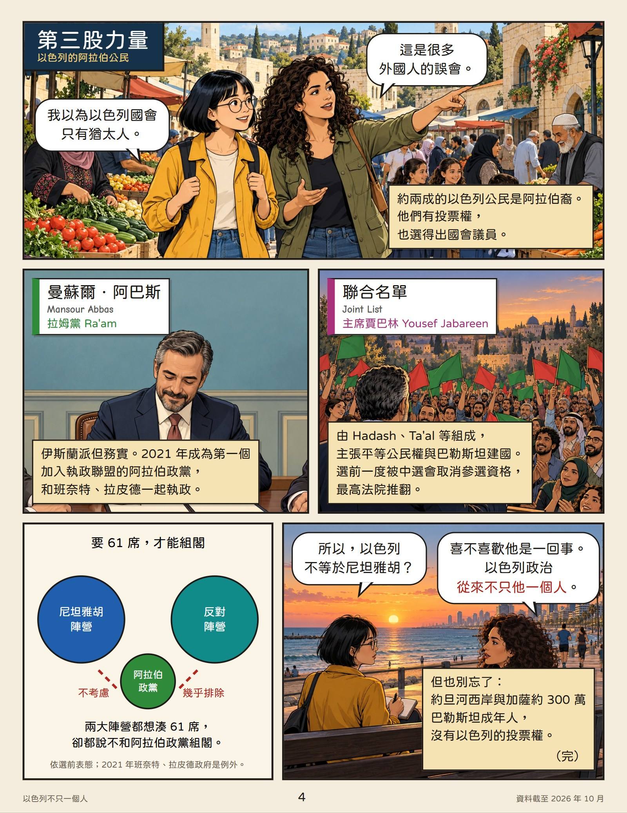

這份漫畫什麼情況下會錯：各黨歸在哪個陣營，依的是選前的公開表態，選後組閣時可能換邊。「以色列是多元民主」指的是以色列公民之間；約旦河西岸與加薩約 300 萬巴勒斯坦成年人沒有投票權，這是評價以色列民主的另一把尺。
人物是依公開形象畫的插畫，不是寫實肖像；導覽者阿晴、諾雅是虛構角色。資料截至 2026 年 10 月，譯名依中央社慣用寫法。來源： Times of Israel、 Al Jazeera、 Al Jazeera（甘茨退選）、 Wikipedia、 Al-Monitor、 中央社。